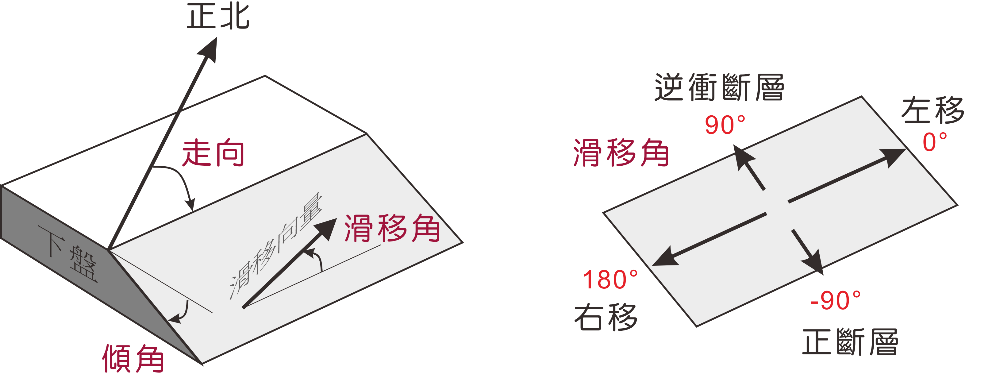
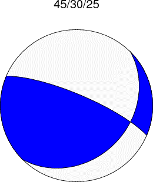

斷層機制解是地震學上用來判定震源錯動型態的一種表現方式， 一般是透過地震P波的初動解或地震波形逆推等方法來取得。 如下圖所示，描述震源機制的參數包括敘述斷層面幾何形貌的走向(strike)和傾角(dip)， 以及上盤相對於下盤的滑移角(slip or rake)。
斷層走向的定義是斷層面和水平面的交線相對於正北的方位(azimuth)， 由正北順時鐘繞一圈為360º； 傾角則是斷層面與水平面的夾角， 水平為0º，而垂直面為90º。 特別要注意的是斷層的走向與傾角方向有關， 即傾角方向(dip direction)一定位在走向朝右90º的方向， 例如下圖左，因為斷層面朝東南方傾斜， 所以斷層走向為東北而非西南。
在斷層面上，上盤相對於下盤的滑移向量與斷層走向的逆時鐘夾角稱之為滑移角， 這是控制斷層錯動型態的主要參數。 如果滑移角為90º，那就表示上盤相對於下盤往上滑移， 是為逆衝斷層的錯動型態， 反之，若滑移角為-90º， 表示上盤往下滑移，則是正斷層的錯動型態； 同理，滑移角0º相當於斷層左側的地塊向站在斷層線上的觀察者靠近， 表示左移的錯動型態，而180º或-180º都是右移錯動型態。

走向的範圍是0º-360º，傾角的範圍是0º-90º， 而滑移角的範圍則是在-180º-180º之間。 以上圖為例，震源機制參數的走向、傾角和滑移角約為45º、30º和25º， 對應的震源海灘球如下圖，而另一輔助面以高角度向北北東方向傾斜，走向則為西北西方向。
